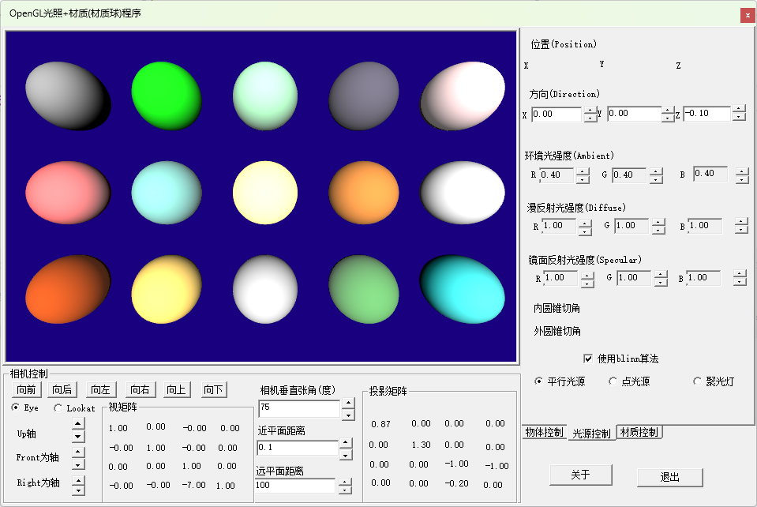
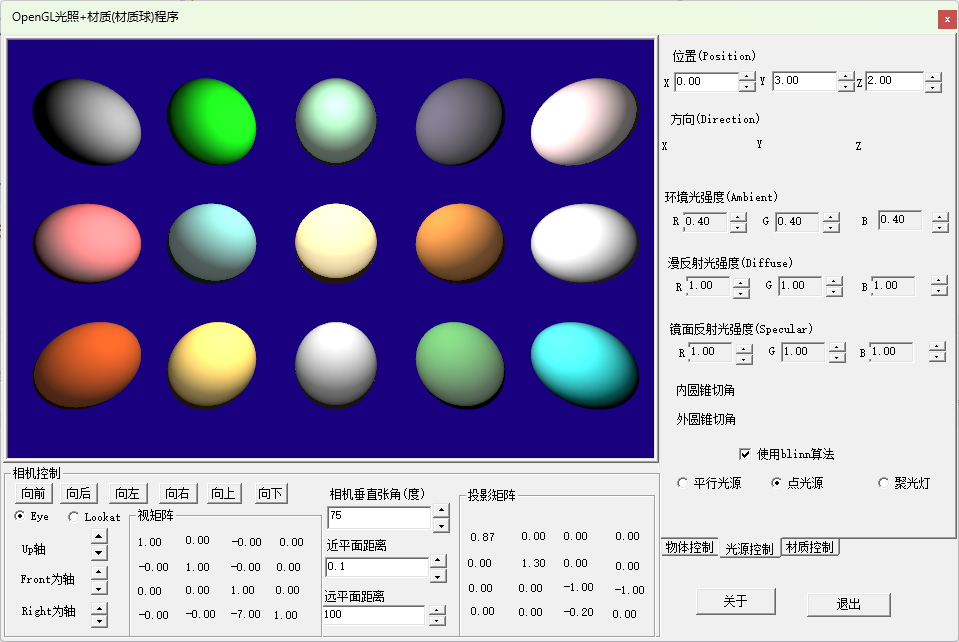

OpenGL基础光照模型演示
作者：刘文庆
这篇作为采用OpenGL开发支持库演示计算机三维图形学基础知识方面的最后一篇文章，在以后的博文章中将直接使用Vulkan作为支持开发环境进行叙述，所以在整理以前例子程序时增加点内容，主要体现在操作界面增加了windows API编程实现TabControl，这方面话费了一个星期事件，相关技术请参阅WIndowsAPI编程中TabControl控件的应用.html 相关博文。本篇文章主要演示计算机图形学中关于光照和材质模型的相关实现过程，其算法原理可参阅一文读懂三维图形学中的光照模型(理论).html 一文的理论讲解，本篇文章主要描述采用C++语言设计出在不同光照模型下，不同材质表现的实际效果，通常称为材质球，如下图所示：

上图演示了在平行光照射下15个不同材质的球体的实际显示效果，第一个球体是仅具有漫反射(Diffuse)属性的材质特征的效果球体，以后的球体分别代表：翡翠、玉、黑曜石、珍珠、红宝石、绿松石、黄铜、青铜、铬、铜、黄金、银、绿色塑料、青色橡胶等材质的实际效果球体。下面我们详细叙述本演示程序的设计过程。
球体的生成
前面我们文章描述物体坐标时使用了顶点坐标glm:vec3(x,y,z)类型、颜色(color)glm::vec4(r,g,b,a)类型、纹理坐标(texture coords)glm::vec2(u,v)类型。在真正的三维模型设计过程中，很少使用颜色(color)指定三维物体的颜色，在采用光照模型描述物体模型时会引入顶点的法向量(Normal）glm:vec3(x,y,z)类型随顶点坐标一起提供。

球体的参数坐标方程描述
如上图所示， 如果我们对经纬线分别生成64个等分时：
注意：
当
当
球体顶点坐标与三角形索引数据生成
根据以上球体的参数方程，如果我们控制给定经纬度抛分的数量(如64份抛分)，人后控制i,j的变换，就能够计算出球体表面的坐标顶点信息。
x1// 生成球的顶点2for (int j = 0; j <= Y_SEGMENTS; j++)3{4for (int i = 0; i <= X_SEGMENTS; i++)5{6float iSegment = (float)i / (float)X_SEGMENTS;8float jSegment = (float)j / (float)Y_SEGMENTS;9float xPos =10(float)(cos(iSegment * 2.0f * G_PI) * sin(jSegment * G_PI) * radius);11float yPos = (float)cos(jSegment * G_PI) * radius;12float zPos =13(float)(sin(iSegment * 2.0f * G_PI) * sin(jSegment * G_PI) * radius);14m_sphere_vertices.emplace_back(glm::vec3(xPos, yPos, zPos));16//这里应该使用一个临时变量19glm::vec3 v3 = glm::vec3(xPos, yPos, zPos);20//然后对v3进行矢量归一化21v3.x = xPos;22v3.y = yPos;23v3.z = zPos;24v3 = glm::normalize(v3);25m_sphere_mNormals.emplace_back(v3);27//这个位置花费了我3天时间，开始没想到计算结果为0的问题，总是不显示纹理29//试了很多中办法，在将该代码改为EathSphereobject后放入TextureCube工程发现还是不显示，30//才意识到计算的纹理坐标可能为031float tempU = (float)i / (float)X_SEGMENTS;32float tempV = (float)j / (float)X_SEGMENTS;33m_sphere_mTexCoords.emplace_back(glm::vec2(tempU, tempV));35}37}
从代码块上看，其坐标生成循序时从球的顶部(北极)上下部(南极)的顺序生成球面坐标值。
有了球体表面的坐标信息，我们绘制球体时采用多个三角形绘制，需要将这些顶点坐标变换为三角形顶点索引，本文绘制函数常用的是glDrawElements(TriangleStrip, pointsNumber, GL_UNSIGNED_INT, 0);函数，其参数为三角形带(TriangleStrip),这种绘制形式最节省三角形索引的数量，再生成三角形索引时困难较多，期代码如下：
xxxxxxxxxx1241// 生成球的Indices2bool oddRow = false;3for (unsigned int i = 0; i < Y_SEGMENTS; ++i)4{5if (!oddRow) // even rows: y == 0, y == 2; and so on6{7for (unsigned int j = 0; j <= X_SEGMENTS; ++j)8{9m_sphere_indices.push_back(i * (X_SEGMENTS + 1) + j);10m_sphere_indices.push_back((i + 1) * (X_SEGMENTS + 1) + j);11}12}13// 这里奇偶分开添加是有道理的，奇偶分开添加，就能首位相连，自己可以拿笔画一画15else16{17for (int j = X_SEGMENTS; j >= 0; --j)18{19m_sphere_indices.push_back((i + 1) * (X_SEGMENTS + 1) + j);20m_sphere_indices.push_back(i * (X_SEGMENTS + 1) + j);21}22}23oddRow = !oddRow;24}
OpenGL灯光类的定义
为了实现OpenGL光照模型，我们定义了灯光的基类：
xxxxxxxxxx1631enum LightType2{3ParallelLightType = 1,4DotLightType = 2,5SpotLightType = 36};7class LightBase8{9LightBase() {};10protected:11LightBase(const LightType& _LightType)12{13m_LightType = _LightType;14}15private:16glm::vec3 m_Ambient; //环境光照射强度Intensity \n" +17glm::vec3 m_Diffuse;//漫反射光照射强度 \n" +18glm::vec3 m_Specular;//镜面光照射强度19public:20virtual ~LightBase()21{22}24LightType m_LightType;25void SetAmbient(const glm::vec3& _Ambient)27{28m_Ambient = _Ambient;29}30glm::vec3 GetAmbient()31{32return m_Ambient;33}34void SetDiffuse(const glm::vec3& _Diffuse)35{36m_Diffuse = _Diffuse;37}38glm::vec3 GetDiffuse()39{40return m_Diffuse;41}42void SetSpecular(const glm::vec3& _Specular)43{44m_Specular = _Specular;45}46glm::vec3 GetSpecular()47{48return m_Specular;49}50void SendAmbientData(const Shader* pShader, const std::string& _AmbientName)52{53pShader->SetVec3(_AmbientName, m_Ambient);54}55void SendDiffuseData(const Shader* pShader, const std::string& _DiffuseName)56{57pShader->SetVec3(_DiffuseName, m_Diffuse);58}59void SendSpecularData(const Shader* pShader, const std::string& _SpecularName)60{61pShader->SetVec3(_SpecularName, m_Specular);62}63};
在此基础上定义了三种灯光类：
① 平行光类
x1class ParallelLight : public LightBase2{3public:4glm::vec3 m_Direction; //平行光照射方向5ParallelLight():LightBase(LightType::ParallelLightType)6{7}9virtual ~ParallelLight()10{11}13void SendDirectionData(const Shader* pShader, const std::string& _DirectionName)14{15pShader->SetVec3(_DirectionName, m_Direction);16}17};20
② 点光源
x1class DotLight : public LightBase2{3public:4glm::vec3 m_Position;5DotLight() :LightBase(LightType::DotLightType)7{8}10virtual ~DotLight()11{12}14void SendPositionData(const Shader* pShader, const std::string& _PositionName)15{16pShader->SetVec3(_PositionName, m_Position);17}18};
③ 聚光灯
x1class SpotLight : public LightBase2{3public:4glm::vec3 m_Position; //光源位置5glm::vec3 m_Direction; //光的方向，即上图的SpotDir6float m_CutOff; //内圆锥切角7float m_OuterCutOff; //外圆锥切角8SpotLight():LightBase(LightType::SpotLightType)10{11}13virtual ~SpotLight()14{15}17void SendPositionData(const Shader* pShader, const std::string& _PositionName)18{19pShader->SetVec3(_PositionName, m_Position);20}21void SendDirectionData(const Shader* pShader, const std::string& _DirectionName)22{23pShader->SetVec3(_DirectionName, m_Direction);24}25void SendOuterCutOffData(const Shader* pShader, const std::string& _OuterCutOffName)26{27pShader->setFloat(_OuterCutOffName, m_CutOff);28}29void SendCutOffData(const Shader* pShader, const std::string& _CutOffName)30{31pShader->setFloat(_CutOffName, m_OuterCutOff);32}33};
材质类的定义
x1class GLMaterial2{3public:4std::string Name;5//环境光材质参数 默认值为GL_ambient7glm::vec3 ambient = glm::vec3(0.2f, 0.2f, 0.2f);//表示材质对环境光反射的RGBA值，8//漫射光材质参数 默认值为GL_diffuse和GL_ambient_AND_diffuse10glm::vec3 diffuse = glm::vec3(0.8f, 0.8f, 0.8f);//表示材质对漫射光的反射RGBA值，11//镜面反射材质参数 默认值为GL_specular13glm::vec3 specular = glm::vec3(0.0f, 0.0f, 0.0f);//表示材质对镜面光的反射RGBA值，14//镜面指数光反射修正亮度因子16float shininess = 0.0f;//表示材质的镜面指数，取值范围是[0,128]，当取值为128时，则表示该材质是一完全镜面。缺省值为0。17//材料是自发光物体19glm::vec3 emissive = glm::vec3(0.0f, 0.0f, 0.0f); //表示材质辐射光RGBA值，前后表面的缺省值都是 (0.0, 0.0, 0.0, 1.0)。20glm::vec3 reflective = glm::vec3(0.0f, 0.0f, 0.0f);//反射，光影,22glm::vec3 transparent = glm::vec3(1.0f, 1.0f, 1.0f);//透明度材质24GLMaterial()26{27}29virtual ~GLMaterial()30{31}33void SendAmbientData(const Shader* pShader, const std::string& _AmbientName)34{35pShader->SetVec3(_AmbientName, ambient);36}37void SendDiffuseData(const Shader* pShader, const std::string& _DiffuseName )38{39pShader->SetVec3(_DiffuseName, diffuse);40}41void SendSpecularData(const Shader* pShader, const std::string& _SpecularName, const std::string& _ShininessName)42{43pShader->SetVec3(_SpecularName, specular);44pShader->setFloat(_ShininessName, shininess);45}46void SendEmissiveData(const Shader* pShader, const std::string& _EmissiveName)48{49pShader->SetVec3(_EmissiveName, emissive);50}51void SendReflectiveData(const Shader* pShader, const std::string& _ReflectiveName)53{54pShader->SetVec3(_ReflectiveName, reflective);55}56void SendTransparentData(const Shader* pShader, const std::string& _TransparentName)58{59pShader->SetVec3(_TransparentName, transparent);60}61};
OpenGL基础光照模型的Shader实现
OpenGL基础光照模型是基于Blinn-Phone模型的具体实现，我们分别实现了三种光源Blinn-Phone模型的Shader,代码如下：
① 顶点着色器
xxxxxxxxxx1221const std::string m_vsShader = R"(2#version 460 core3layout(location = 0) in vec3 aPos;4layout(location = 1) in vec2 aTexCoord;5layout(location = 2) in vec3 aNormal;6out vec3 FragPos;8out vec2 TexCoord;9out vec3 Normal;10uniform mat4 model;12uniform mat4 view;13uniform mat4 projection;14void main()16{17gl_Position = projection * view * model * vec4(aPos, 1.0f);18FragPos = vec3(model * vec4(aPos, 1.0));19TexCoord = vec2(aTexCoord.x, aTexCoord.y);20Normal = vec3(aNormal.x, aNormal.y,aNormal.z);21}22)";
② 平行光源片源着色器
x1std::string fs_ParallelLightShader = R"(2# version 460 core3struct Material4{ vec3 ambient; vec3 diffuse; vec3 specular; float shininess; };5struct DirectLight { vec3 direction; vec3 ambient; vec3 diffuse; vec3 specular; };6out vec4 FragColor; in vec3 FragPos;7in vec2 TexCoord; in vec3 Normal;8//在光照模型计算过程中不需要考虑物体的颜色，其实Material的数值相当于物体的颜色9// " uniform vec3 objectColor; // 顶点本身的颜色10uniform bool blinn; uniform vec3 viewPos; uniform Material material; uniform DirectLight directLight;11void main() { // 环境光照--环境光的计算很简单，光的强度*材质强度*物体颜色(这里物体颜色默认为1)12vec3 ambient = directLight.ambient * material.ambient;13// 漫反射---14vec3 norm = normalize(Normal); vec3 lightDir = normalize(-directLight.direction); float diff = max(dot(norm, lightDir), 0.0); vec3 diffuse = directLight.diffuse * (diff * material.diffuse);15// 镜面光照17vec3 viewDir = normalize(viewPos - FragPos); float spec = 0; if (blinn) { vec3 halfwayDir = normalize(lightDir + viewDir); spec = pow(max(dot(norm, halfwayDir), 0.0), material.shininess); } else { vec3 reflectDir = reflect(-lightDir, norm); spec = pow( max( dot(viewDir, reflectDir), 0.0), material.shininess); } vec3 specular = directLight.specular * (spec * material.specular); vec3 result = ambient + diffuse + specular; FragColor = vec4(result, 1.0); })";
③ 点光源片源着色器
x1std::string fs_PointLightShader = R"(2# version 460 core3struct Material4{5vec3 ambient;6vec3 diffuse;7vec3 specular;8float shininess;9};10struct PointLight11{12vec3 position;13vec3 ambient;14vec3 diffuse;15vec3 specular;16};17out vec4 FragColor;18in vec3 FragPos;19in vec2 TexCoord;20in vec3 Normal;21//在光照模型计算过程中不需要考虑物体的颜色，其实Material的数值相当于物体的颜色22// " uniform vec3 objectColor; // 顶点本身的颜色23uniform int blinn;24uniform vec3 viewPos;25uniform Material material;26uniform PointLight pointLight;27void main()28{29// 环境光照--环境光的计算很简单，光的强度*材质强度*物体颜色(这里物体颜色默认为1)30vec3 ambient = pointLight.ambient * material.ambient;31// 漫反射---33vec3 norm = normalize(Normal);34vec3 lightDir = normalize(pointLight.position - FragPos);35float diff = max(dot(norm, lightDir), 0.0);36vec3 diffuse = pointLight.diffuse * (diff * material.diffuse);37// 镜面光照39vec3 viewDir = normalize(viewPos - FragPos);40float spec = 0;41if (blinn==1)42{43vec3 halfwayDir = normalize(lightDir + viewDir);44spec = pow(max(dot(norm, halfwayDir), 0.0), material.shininess);45}46else47{48vec3 reflectDir = reflect(-lightDir, norm);49spec = pow( max( dot(viewDir, reflectDir), 0.0), material.shininess);50}51vec3 specular = pointLight.specular * (spec * material.specular);52vec3 result = ambient + diffuse + specular;53FragColor = vec4(result, 1.0);54}55)";
④ 聚光灯片源着色器
xxxxxxxxxx11551std::string fs_SpotLightShader = R"(2# version 330 core3struct Material4{5vec3 ambient;6vec3 diffuse;7vec3 specular;8float shininess;9};10struct SpotLight11{12vec3 position;13vec3 direction;14float cutOff;15float outerCutOff;16vec3 ambient;18vec3 diffuse;19vec3 specular;20};21out vec4 FragColor;22in vec3 FragPos;23in vec3 Normal;24//在光照模型计算过程中不需要考虑物体的颜色，其实Material的数值相当于物体的颜色25// " uniform vec3 objectColor; // 顶点本身的颜色26uniform int blinn;27uniform vec3 viewPos;28uniform Material material;29uniform SpotLight spotLight;30float constant=1.0;31float linear = 0.0;32float quadratic = 0.0;33void CalculateAttenuation(float distance)34{35if(distance<7.0)36{37linear = 0.7;38quadratic = 1.8;39}40else if(distance<13.0)41{42linear = 0.35;43quadratic=0.44;44}45else if (distance < 20.0)46{47linear = 0.22;48quadratic = 0.20;49}50else if (distance < 32.0)51{52linear = 0.14;53quadratic = 0.07;54}55else if (distance < 50.0)56{57linear = 0.09;58quadratic = 0.032;59}60else if (distance < 65.0)61{62linear = 0.07;63quadratic = 0.017;64}65else if (distance < 100.0)66{67linear = 0.045;68quadratic = 0.0075;69}70else if (distance < 160.0)71{72linear = 0.027;73quadratic = 0.0028;74}75else if (distance < 200.0)76{77linear = 0.022;78quadratic = 0.0019;79}80else if (distance < 325.0)81{82linear = 0.014;83quadratic = 0.0007;84}85else if (distance < 600.0)86{87linear = 0.007;88quadratic = 0.0002;89}90else if (distance < 3250.0)91{92linear = 0.0014;93quadratic = 0.000007;94}95}96void main()97{98// 计算各个光照分量答案99vec3 ambient = spotLight.ambient * material.ambient;100// 环境光照--环境光的计算很简单，光的强度*材质强度*物体颜色(这里物体颜色默认为1)102vec3 lightDir = normalize(spotLight.position - FragPos);103// 计算漫反射系数105float diff = max(dot(Normal, lightDir), 0.0);106vec3 diffuse = spotLight.diffuse * diff * material.diffuse;107// 镜面反射系数109vec3 viewDir = normalize(viewPos - FragPos);110vec3 specular;111if(blinn==1)112{113vec3 halfwayDir = normalize(lightDir + viewDir);114float spec = pow(max(dot(Normal, halfwayDir), 0.0), material.shininess);115specular = spotLight.specular * (spec * material.specular);116}117else118{119vec3 reflectDir = reflect(-lightDir, Normal);120float spec = pow( max( dot(viewDir, reflectDir), 0.0), material.shininess);121specular = spotLight.specular * (spec * material.specular);122}123// 光线衰减124float distance = length(spotLight.position - FragPos);125CalculateAttenuation(distance);126float attenuation = 1.0f / (constant + linear * distance + quadratic * (distance * distance));127//光线与聚光灯spotDir夹角余弦值129float theta = dot(lightDir, normalize(-spotLight.direction));130float inCutOff = cos(spotLight.cutOff);131float outCutOff = cos(spotLight.outerCutOff);132float epsilon = inCutOff - outCutOff;134float intensity = clamp((theta - outCutOff) / epsilon, 0.0, 1.0);135// 计算聚光系数137// " float theta = dot(lightDir, normalize(-spotLight.direction));138//" float epsilon = spotLight.cutOff - spotLight.outerCutOff;139// " float intensity = clamp((theta - spotLight.outerCutOff) / epsilon, 0.0, 1.0);140//给每个光照分量乘上衰减系数和聚光系数142// " ambient *= attenuation * intensity;143diffuse *= attenuation * intensity;144specular *= attenuation * intensity;145if(theta < inCutOff)146{147vec3 result = ambient*attenuation * intensity + diffuse + specular;148FragColor = vec4(result, 1.0);149}150else151{152FragColor = vec4(ambient, 1.0);153}154}155)";
程序圆形效果
程序在点光源照射下的运行效果：程序源代码WinOpenGL3D_ObjectWithLightAndMaterial.zip

本演示程序实现了动态调整灯光和材质参数的功能，你可以在显示单个球体情况下，调整参数达到你需要的效果。